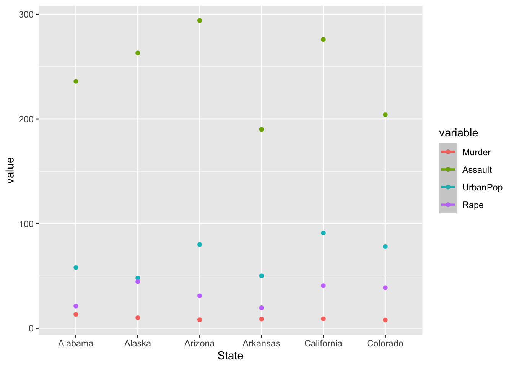

Exploring variable combinations of marks and channels for BCB 504
Assignment
DataViz
Author
Ronald Bentil
Published
February 14, 2023
The data used in this assignment is an existent dataset, available as a package (USArrests) in ‘R studio’ software. It provides information on violent crime rates by US state. The data set contains information on arrests for assault, murder, and rape in 6 six US states per 100,000 residents. It also provides information on proportion of population living in urban areas. This dataset provides originally provides information on 50 states. However, for the purpose of this assignment, I modified the data to use 6 states. (PS: states were chosen at random with no special criteria or basis)
I am going to attempt to use marks and channels to visualize the data set using the figures below (Figure.1 and Figure.2) to support and explain the key parameters: Expressiveness and effectiveness, Discriminability, Separability, and Popout, as much as possible.
Figure. 1
Visualization adequately describing essential marks and channels
`geom_smooth()` using method = 'loess' and formula = 'y ~ x'

Expressiveness and effectiveness:
Figure.1 clearly expresses all of the information in the dataset and explicitly provides information on the data at a glance. This grouped bar plot is the best (most effective) visualization because most importantly, the data set is ordered. in additon to that, it shows the variables (crimes) grouped per state as respresented in the data set for easy understanding.
On the other hand, Figure. 2, is an inappropriate visualization because it is not expressive and definetely not the most effective representation of the data. The idea is that at a glance the viewer should be able to understand the described data. And this does not meet that requirement.
Discriminability
This simply asks the question whether ‘differences in items are perceptible to the viewer as intended’. From Figure.1, we can see that the differences in crime rates across states are easily noticed and therefore quite a good represenation of discriminability.
However, Figure. 2 does not explicitly meet that requirement by not showing the differences in variables clearly and thus, not a good visualization.
Separability
This emphasizes avoidance of ‘unanticipated combination’. In that, the viewer should be able to separate one channel from the other. In my understanding of this, Figure. 1 adequately represents this by separating the various variables from one state to the other.
Figure. 2, however, does not do this. Rather, it seems to cram the variables together and does not exactly provide clear distinction among the variables.
Popout
The description seeks to make the viewer see the clear differences in visualization of any given data set easily. In that, distinct items immediately stand out from the others.
In Figure. 1, the rates of various variables standout evidently at a a glance unlike in Figure.2 where the visualization confuses viewer on the message it intends portraying.
Textbook Reference:
Munzner, T. (2014). Visualization Analysis and Design. Boca Raton, FL: CRC Press, Taylor and Francis Group.
Source Code
---title: "Assignment 4"subtitle: "Marks and Channels"author: "Ronald Bentil"date: "2023-02-14"categories: [Assignment, DataViz]image: "Image.jpeg"code-fold: truecode-tools: truedescription: "Exploring variable combinations of marks and channels for BCB 504"---The data used in this assignment is an existent dataset, available as a package **(USArrests)** in 'R studio' software. It provides information on violent crime rates by US state. The data set contains information on arrests for assault, murder, and rape in 6 six US states per 100,000 residents. It also provides information on proportion of population living in urban areas.This dataset provides originally provides information on 50 states. However, for the purpose of this assignment, I modified the data to use 6 states. (PS: states were chosen at random with no special criteria or basis)```{r}library(tidyverse)library(readxl)``````{r}library(reshape2)library(ggplot2)```**Data frame** A data frame was created to be able to make it easy for coding to plot the grouped bar chart as intended ```{r}df <-data.frame(State=c("Alabama", "Alaska", "Arizona", "Arkansas", "California", "Colorado"), Murder =c(13.2,10,8.1,8.8,9,7.9), Assault =c(236,263,294,190,276,204), UrbanPop =c(58,48,80,50,91,78), Rape =c(21.2,44.5,31,19.5,40.6,38.7))``````{r}print(df)```**Melting data**This was done to organize the data frame into an elongated format```{r}data.m <-melt(df, id.vars ='State')``````{r}print(data.m)```I am going to attempt to use marks and channels to visualize the data set using the figures below (Figure.1 and Figure.2) to support and explain the key parameters: Expressiveness and effectiveness, Discriminability, Separability, and Popout, as much as possible.**Figure. 1**Visualization adequately describing essential marks and channels```{r}ggplot(data.m, aes(State, value)) +geom_bar(aes(fill = variable), width =0.8, position =position_dodge(width=0.8), stat="identity") +theme(legend.position="top", legend.title =element_blank(),axis.title.x=element_blank(), axis.title.y=element_blank())```**Figure. 2**Inappropriate visualization to describe marks and channels ```{r}ggplot(data.m, aes(State,value, col=variable)) +geom_point() +stat_smooth() ```**Expressiveness and effectiveness**:Figure.1 clearly expresses all of the information in the dataset and explicitly provides information on the data at a glance. This grouped bar plot is the best (most effective) visualization because most importantly, the data set is ordered. in additon to that, it shows the variables (crimes) grouped per state as respresented in the data set for easy understanding. On the other hand, Figure. 2, is an inappropriate visualization because it is not expressive and definetely not the most effective representation of the data. The idea is that at a glance the viewer should be able to understand the described data. And this does not meet that requirement.**Discriminability**This simply asks the question whether 'differences in items are perceptible to the viewer as intended'. From Figure.1, we can see that the differences in crime rates across states are easily noticed and therefore quite a good represenation of discriminability. However, Figure. 2 does not explicitly meet that requirement by not showing the differences in variables clearly and thus, not a good visualization.**Separability**This emphasizes avoidance of 'unanticipated combination'. In that, the viewer should be able to separate one channel from the other. In my understanding of this, Figure. 1 adequately represents this by separating the various variables from one state to the other. Figure. 2, however, does not do this. Rather, it seems to cram the variables together and does not exactly provide clear distinction among the variables.**Popout**The description seeks to make the viewer see the clear differences in visualization of any given data set easily. In that, distinct items immediately stand out from the others.In Figure. 1, the rates of various variables standout evidently at a a glance unlike in Figure.2 where the visualization confuses viewer on the message it intends portraying. **Textbook Reference:**Munzner, T. (2014). Visualization Analysis and Design. Boca Raton, FL: CRC Press, Taylor and Francis Group.